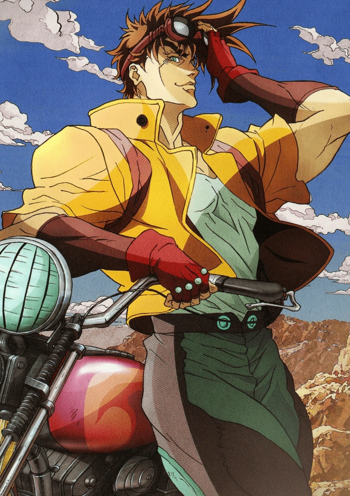

Jojo- Battle Tendecy

| Início JOJO parte 1 JOJO parte 2 JOJO parte 3 JOJO parte 4 JOJO parte 5 JOJO parte 6 JOJO parte 7 JOJO parte 8 |


Joseph Joestar (ジョセフ・ジョースター Josefu Jōsutā) é o protagonista da segunda parte de JoJo's Bizarre Adventure, Battle Tendency, e o segundo JoJo da série. Ele também aparece como um aliado primário em Stardust Crusaders, e como um personagem neutro em Diamond is Unbreakable.
Battle Tendency é a segunda parte ou saga de Jojo's Bizarre Adventure, se passa na década de 1930, e é protagonizada por Joseph Joestar, neto de Jonathan Joestar. A saga aprofunda na origem da máscara de pedra, e nos homens do pilar, seres que habitam a terra há milhares de anos.Joseph Joestar vive em Nova Iorque com sua avó, Erina Pendleton, e assim como Jonathan, é capaz de utilizar o Ramon, habilidade aparentemente herdada de seu avô.